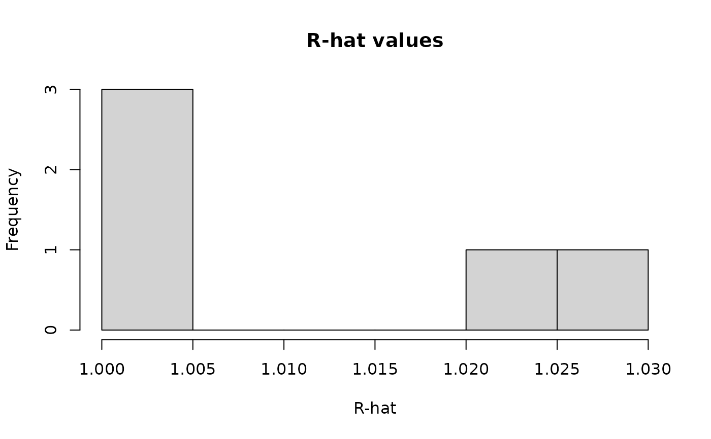

Extract R-hat values from a fitted MCMC object as a numeric vector.
The returned object prints a compact convergence summary and can be passed
directly to functions such as hist.
Usage
rhat_summary(fit, ...)
# Default S3 method
rhat_summary(fit, ...)
# S3 method for class 'mcmc_fit'
rhat_summary(
fit,
pars = NULL,
chains = NULL,
best_chains = NULL,
inc_random = FALSE,
inc_transform = TRUE,
inc_generate = FALSE,
finite = TRUE,
...
)Arguments
- fit
A fitted model object.
- ...
Additional arguments passed to methods.
- pars
Character or numeric vector specifying parameters to include. If
NULL, all available parameters are summarized.- chains
Numeric vector specifying chains to include.
- best_chains
Integer; number of best chains to retain based on mean log-posterior.
- inc_random
Logical; whether to include random effects. Default is
FALSE.- inc_transform
Logical; whether to include transformed parameters. Default is
TRUE.- inc_generate
Logical; whether to include generated quantities. Default is
FALSE.- finite
Logical; whether to drop non-finite or missing R-hat values. Default is
TRUE.
Examples
# \donttest{
data(debate, package = "BayesRTMB")
mdl <- rtmb_lm(sat ~ talk + perf, data = debate)
#> Pre-checking model code...
#> Checking RTMB setup...
fit <- mdl$sample(sampling = 200, warmup = 200, chains = 2)
#> Starting sequential sampling (chains = 2)...
#> chain 1 started...
#> chain 1: iter 200/400 (50%) warmup
#> chain 1: iter 400/400 (100%) sampling
#> chain 1 done (100%)
#> chain 2 started...
#> chain 2: iter 200/400 (50%) warmup
#> chain 2: iter 400/400 (100%) sampling
#> chain 2 done (100%)
#> sampling: 100%
r <- rhat_summary(fit)
r
#> R-hat summary
#> n min median q90 q95 max n_gt_1.01 n_gt_1.05
#> 5 1 1 1.03 1.03 1.03 2 0
hist(r)

# }